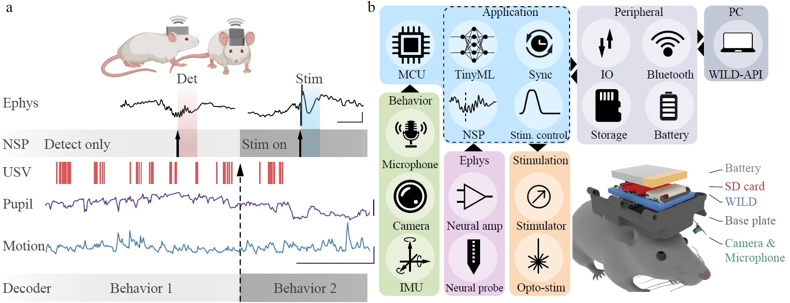
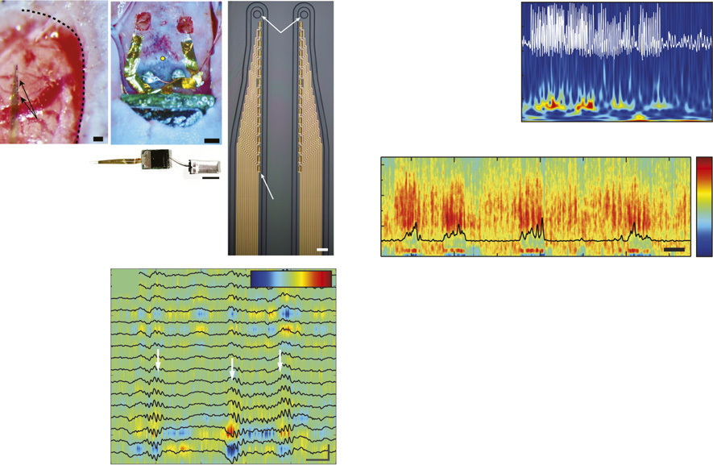
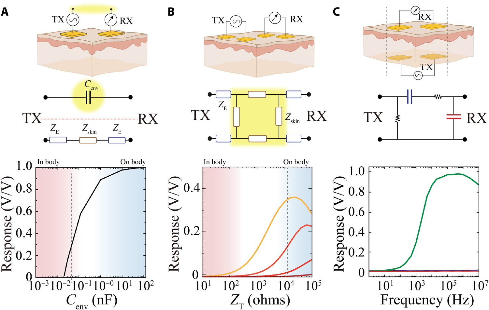
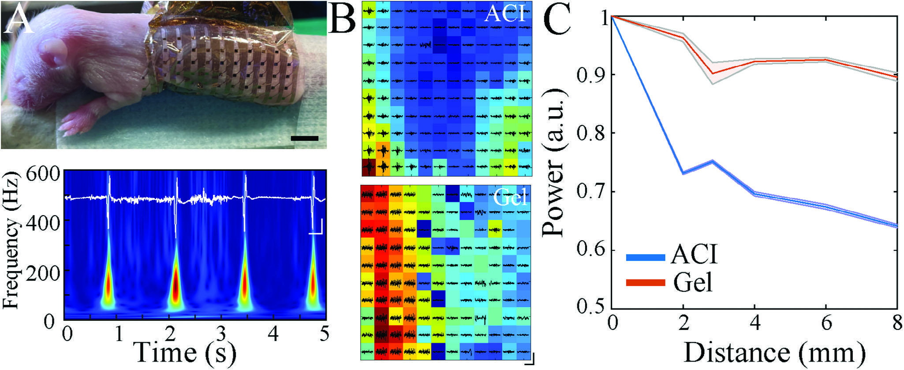
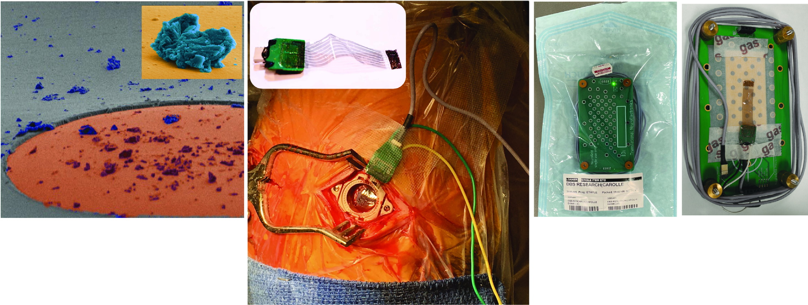
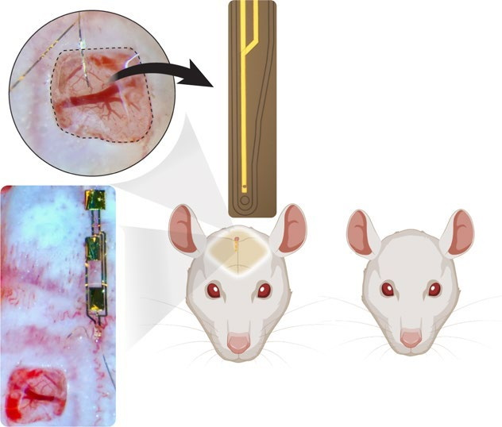
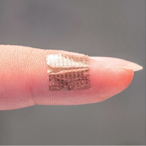

Cornell University | Department of Neurobiology and Behavior
Zifang "Frank" Zhao
Wireless neuro-behavioral recording and closed-loop bioelectronics for systems neuroscience.
I develop implantable, wearable, and wireless bioelectronic systems for recording, stimulation, embedded processing, and responsive intervention in freely behaving animals. My work includes WILD, a multimodal neurologger platform for local electrophysiology, behavioral sensing, and closed-loop manipulation during naturalistic behavior.
Publications
A rolling view across WILD, implantable neuroelectronics, ionic and organic biointerfaces, and high-resolution surface electrophysiology.

WILD wireless neuro-behavioral platform
An ultra-lightweight multimodal neurologger for local electrophysiology, behavioral sensing, embedded processing, and responsive stimulation in freely behaving small animals.

Responsive implantable neuroelectronics
Fully implantable multiplexed neuroelectronics for preclinical closed-loop recording and stimulation in pathological network activity.

Ionic communication through tissue
Implantable bioelectronic communication strategies that use ionic conduction through tissue rather than conventional radio frequency links alone.

High-resolution epidermal interfaces
Interface engineering for denser and more spatially specific epidermal electrophysiology.

Single-neuron organic interfaces
Organic neural interfaces aimed at single-neuron-scale resolution with device architectures suitable for advanced neurotechnology development.

Conformable organic biointerfaces
Standalone organic electrochemical transistor systems for soft, conformable interfaces with biological tissue.

Event-based sensors for closed-loop neurostimulation
Low-energy organic sensing systems designed for fast, high-frequency closed-loop neurostimulation.
Research overview
Research Topics
My work is organized around neural interface technologies that support mechanistic questions in systems neuroscience rather than device performance in isolation.
Wireless neuro-behavioral interfaces
WILD and related implantable or wearable platforms for local neural recording, behavioral sensing, stimulation, and low-power embedded control in freely behaving animals.
Flexible and organic biointerfaces
Soft, conformable, and iontronic device architectures designed to improve tissue coupling, spatial resolution, and new modes of bioelectronic communication.
Closed-loop systems neuroscience
Experimental systems for biomarker-guided intervention and multimodal recording in epilepsy, pain, and naturalistic behavior.
Research direction
Technology Development for Mechanistic Neuroscience
Scientific direction
- Build WILD and related neural interfaces that combine recording, stimulation, sensing, local storage, and embedded decision making.
- Use preclinical closed-loop systems to study circuit dynamics in epilepsy, pain, and natural behavior.
- Develop bioelectronic materials and form factors that expand what can be measured or perturbed in freely behaving animals.
Research approach
- Hardware design, materials, and analysis are developed alongside specific neuroscience questions.
- Projects are framed for experimental rigor and biological interpretability.
- Claims are kept bounded to preclinical and technology-development settings unless broader evidence exists.